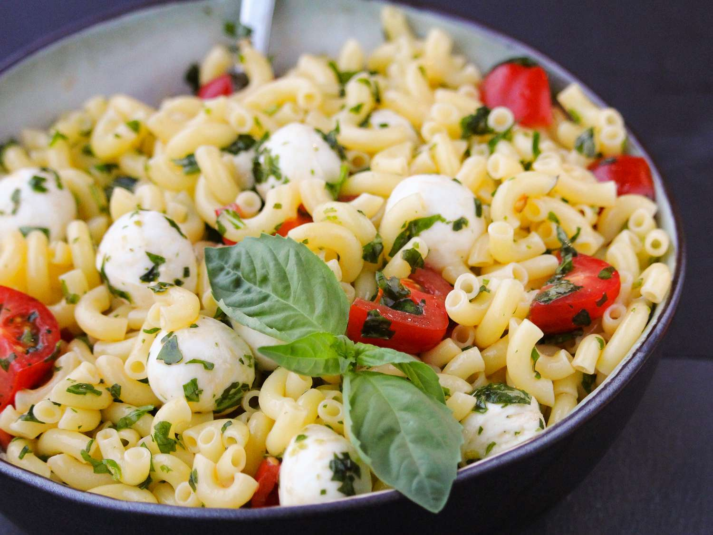

Pesto Caprese Pasta Salad

Description
This Caprese pasta salad with rotini pasta, pesto, grape tomatoes, fresh mozzarella balls, and fresh basil is a delicious twist on the traditional Italian salad.
Ingredients
- 1 ½ cups rotini pasta
- 3 tablespoons pesto, or to taste
- 1 tablespoon extra-virgin olive oil
- ¼ teaspoon salt, or to taste
- ¼ teaspoon granulated garlic
- ⅛ teaspoon ground black pepper
- ½ cup halved grape tomatoes
- ½ cup small (pearlini) fresh mozzarella balls
- 2 leaves fresh basil leaves, finely shredded
Steps
- Bring a large pot of lightly salted water to a boil; cook the rotini at a boil until tender yet firm to the bite, about 8 minutes; drain.
- Mix pesto, olive oil, salt, granulated garlic, and black pepper in a bowl; add rotini. Toss to coat. Fold in tomatoes, mozzarella, and fresh basil.